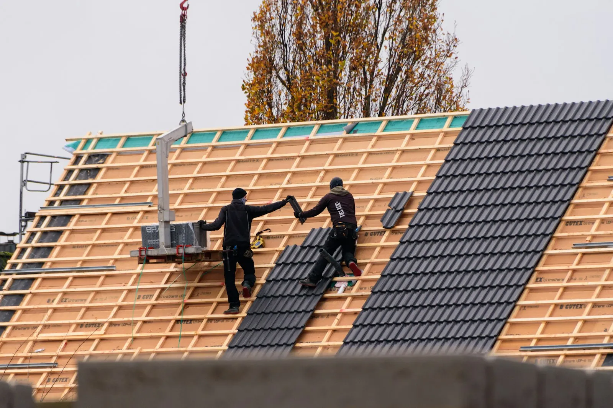

Daken
Welk dak heb je?
Kies je type dak. Je ziet wat Aldakon ervoor kan doen. Twijfel je, dan komen we gewoon even kijken.
Aldakon legt, herstelt en vernieuwt daken in Lier en de buurgemeenten, al sinds 1999. Hellend of plat, met een nieuw dakraam of nieuwe ramen erbij: één aanspreekpunt voor het hele werk.

Kies je type dak. Je ziet wat Aldakon ervoor kan doen. Twijfel je, dan komen we gewoon even kijken.

Aldakon doet niet alleen daken, maar plaatst ook schrijnwerk. Handig als je bij een renovatie meteen nieuwe ramen of een nieuw dakraam wil. Je hebt één vakman voor het geheel, en alles sluit netjes op elkaar aan.
Duidelijk vooraf, net tijdens de werken en proper als we vertrekken.
We komen naar je dak kijken en luisteren naar wat je wil.
Een duidelijke prijs, met de materialen en wat er gebeurt.
Op de afgesproken dagen, met een werf die netjes blijft.
We lopen alles samen na. Pas als jij tevreden bent, is het af.


Vertel kort wat je wil laten doen. Je bericht opent in WhatsApp, dan kan je er meteen een foto van je dak bij zetten.
Tuinweg 8 in Lier. Bel gerust, ook voor een kleine herstelling.
0496 23 97 84Bellen WhatsAppMet een foto van je dak Tuinweg 8, 2500 LierRouteJa. Voor een offerte komen we altijd eerst naar je dak kijken, zodat de prijs klopt met wat er echt moet gebeuren.
Ook een losse pan, een lekkende dakgoot of een dakraam dat niet meer dicht wil. Bel gerust.
Dat is net het voordeel. Aldakon doet zowel dakwerken als schrijnwerk, dus je hebt één aanspreekpunt.
Daar bestaan in Vlaanderen premies voor, maar de voorwaarden veranderen geregeld. Kijk het na op de website van de Vlaamse overheid, of vraag het ons bij het plaatsbezoek.
Ik maakte deze demo voor jullie om te tonen wat er kan. Na een kort gesprek maak ik er iets veel persoonlijkers van, helemaal naar jullie wens.
Vrijblijvend. Ik kom langs of we bellen.
Op maat, op jullie eigen domein.
Geen voorschot. Jullie betalen pas als alles klaar is.
Hosting, domeinnaam en kleine wijzigingen, zoals nieuwe openingsuren.
Omdat een voorbeeld meer zegt dan een mail. Zo zien jullie meteen wat er kan, en het kost jullie niets.
Nee. Het gesprek is vrijblijvend. Vinden jullie het niks, dan is het daarmee gedaan.
Na ons gesprek staat jullie site binnen 10 tot 14 dagen online.
Zeker. Jullie domeinnaam kan gewoon blijven, de nieuwe site komt in de plaats van de oude.
Nee, dat doe ik op basis van ons gesprek. Eigen foto's zijn mooi meegenomen, maar niet nodig om te starten.